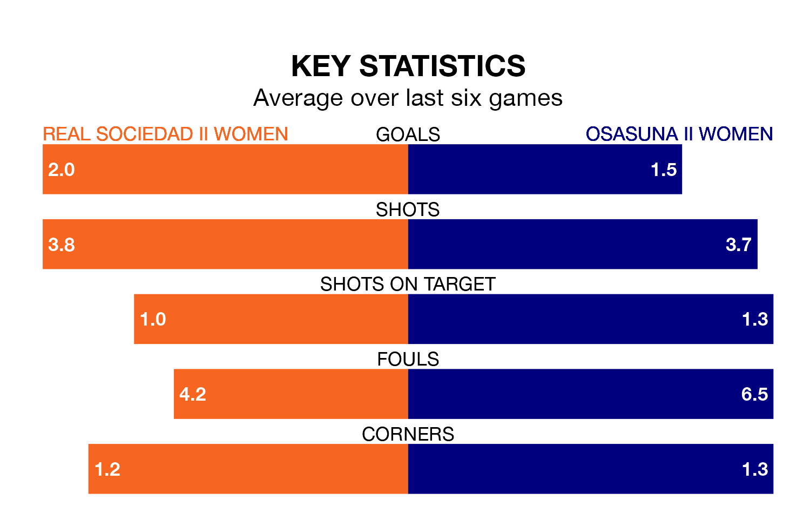

Relegation candidates Real Sociedad II Women face a challenge against high-flying Osasuna II Women on Sunday.
Real Sociedad II Women are 14th in the Segunda Federación Femenina table, and have picked up 11 wins and seven draws in their 28 games to date.
Osasuna II, meanwhile, are zero in the standings with 26 points, having won six and drawn eight, and are 44 points behind table-toppers Real Madrid II Women.
With 41 goals in 28 games so far this season, Sociedad II Women are scoring more than average in the league with 1.5 goals per game. But they are conceding more than average too, letting in 38 goals at a rate of 1.4 per game.
Osasuna II, meanwhile, are below average scorers, with 1.2 goals per game, compared to a league average of 1.3. They have conceded 1.9 goals per game.
The home team are in reasonable form in the Segunda Federación Femenina, with four wins and two losses from their last six games.
With two wins and two draws over that period, the visitors' form is worse – they have taken eight points from 18, compared to Sociedad II Women's 12.
Sociedad II Women's last match was on April 20, a 5-0 loss against Bizkerre Women.
Osasuna II beat Rayo Vallecano Women 2-0 last time out, also on April 20, with on the scoresheet.
Updated: 07:59 (UTC), 26/04/24